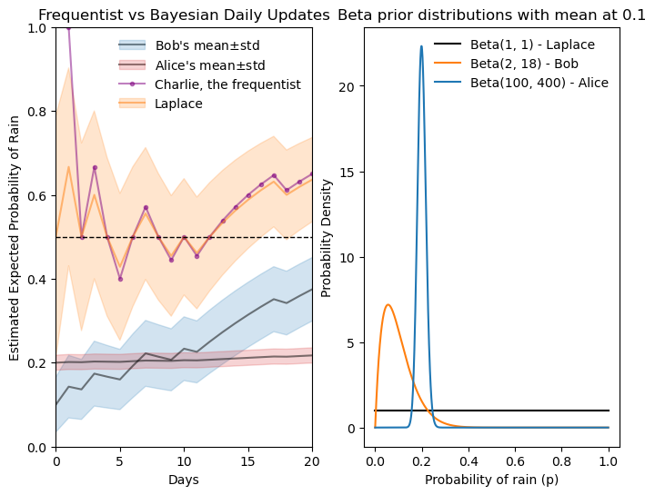

28 conjugate prior
We will learn about conjugate priors in Bayesian statistics from a concrete example. Once we understand it, we will generalize the idea.
28.1 question
Let’s use here the same example from the chapter on cross-entropy and KL divergence:
Assume I live in city A, where it rains 50% of the days. A friend of mine lives in city B, where it rains 10% of the days. What happens when my friend visits me in city A and, not knowing any better, assumes that it rains 10% of the days?
The specific question we want to answer is: how can my friend update their belief about the probability of rain when they arrive in city A?
28.2 bayes’ theorem
We will use Bayes’ theorem to update our friend’s belief. To makes things easier to remember, let’s call the hypothesis p (the probability of rain), and the evidence R (a specific observation of rain or no rain). Thus, Bayes’ theorem can be rewritten as:
\begin{align} P(p|R) &= \frac{P(R|p)\cdot P(p)}{P(R)} \\ \text{posterior}&= \frac{\text{likelihood}\cdot \text{prior}}{\text{evidence}} \end{align}
where:
- p is the hypothesis, the probability of rain.
- R is the evidence, the observation of rain or no rain.
- P(p) is the prior probability, our friend’s initial belief about the probability of rain.
- P(R|p) is the likelihood, the likelihood of observing rain given the hypothesis that it rains with a certain probability.
- P(R) is the evidence, the total probability of observing the evidence.
- P(p|R) is the posterior probability, this is what we want to find: our friend’s updated belief about the probability of rain p after observing the evidence.
28.3 modeling the likelihood
In this problem, every day that passes it either rains or it does not rain. This can be understood as a Bernoulli process, where each day is an independent trial with two possible outcomes. “Success” would be ocurrence of rain (R=1), which happens with probability p. “Failure” would be no rain (R=0), which happens with probability 1-p. In mathematical terms, the likelihood can be modeled as:
P(R=r|p) = \begin{cases} p & \text{if } r=1 \\ 1-p & \text{if } r=0 \end{cases}.
This can be more compactly written as:
P(R=r|p) = p^r (1-p)^{1-r}.
This equation describes only one observation. However, we can extend it to multiple observations. Suppose our friend observes, over a total of n days, k days of rain and n-k days of no rain. The likelihood of observing this specific sequence of rain and no rain, given the probability p, can be modeled using the binomial distribution, which is the natural extension of the Bernoulli process for multiple trials:
P(R=k|p) = \binom{n}{k} p^k (1-p)^{n-k}.
This is the time to be more precise. When we previously said that “p is the hypothesis, the probability of rain”, we left behind the modeling aspect. We assumed here a generative model, the Bernoulli process. Rephrasing the statement more precisely: “p is the parameter of the generative model (Bernoulli process) that generates the observations of rain and no rain”.
28.4 modeling the prior
The prior in the Bayesian framework is not a single value. From the question above, we might think that our friend’s prior belief about the probability of rain is simply 0.1=10\%. However, in Bayesian statistics, the prior is represented as a probability distribution over all possible values of p. In would make sense to choose a probability distribution that is highest around 0.1 and lower elsewhere. There are infinite possible distributions that could represent this belief, so which should we choose? See below three examples of possible prior distributions, all have their mean at 0.1.
plot various possible distributions
fig, ax = plt.subplots(figsize=(6, 4))
location = 0.1
p = np.linspace(0, 1, 1000)
ax.plot(p, beta.pdf(p, 2, 2/location-2), label='Beta(2, 18)', color="black")
ax.plot(p, norm.pdf(p, loc=location, scale=0.02), label='Normal(0.1, 0.05)', color="tab:orange")
ax.plot(p, uniform.pdf(p, loc=location-0.05, scale=0.1), label='Uniform(0.05, 0.15)', color="tab:blue")
ax.legend(frameon=False)
ax.set(xlabel='Probability of rain (p)',
ylabel='Probability Density',
title='Possible prior distributions for the probability of rain');
A particular good choice is the Beta distribution. The Beta distribution is defined on the interval [0, 1], which makes it suitable for modeling probabilities. It is parameterized by two positive shape parameters, \alpha and \beta, which determine the shape of the distribution. The probability density function (PDF) of the Beta distribution is given by:
\text{Beta}(p|\alpha, \beta) = \frac{p^{\alpha - 1} (1-p)^{\beta - 1}}{B(\alpha, \beta)},
where B(\alpha, \beta) is the Beta function, which serves as a normalization constant to ensure that the total probability integrates to 1.
The Beta distribution in the graph above is \text{Beta}(p|\alpha=2, \beta=18). How did I choose these parameters? The mean of a Beta distribution is given by:
\text{mean} = \frac{\alpha}{\alpha + \beta}.
The derivation of this formula is not shown here, but it involves calculating the expected value of the distribution using its pdf, and using properties of the Beta function and of the Gamma function. Indeed, by choosing \alpha=2 and \beta=18, we get a mean of 0.1.
Intuitively, a rain probability of 0.1 means that out of every n days, we expect it to rain on average 0.1n days. It terms of “successes” and “failures”:
\begin{align*} \text{mean} &= \frac{\alpha}{\alpha + \beta} \\ &= \frac{\text{expected successes}}{\text{expected successes} + \text{expected failures}} \\ &= \frac{\text{expected successes}}{\text{total number of trials}} \end{align*}
Instead of choosing \alpha=2 and \beta=18, we could choose other values that maintain the same mean but represent different levels of confidence or prior knowledge. See the three Beta distributions plotted below. All have their mean at 0.1, but the black one (\alpha=2, \beta=18) is more spread out, indicating less certainty about the probability of rain when only 2+18=20 days are considered. Increasing the number of days to 50 (orange, \alpha=5, \beta=45) or 200 (blue, \alpha=20, \beta=180) makes the distribution more peaked around the mean, indicating greater confidence in the estimate of the probability of rain.
three beta distributions
fig, ax = plt.subplots(figsize=(6, 4))
location = 0.1
p = np.linspace(0, 1, 1000)
ax.plot(p, beta.pdf(p, 2, 2/location-2), label='Beta(2, 18)', color="black")
ax.plot(p, beta.pdf(p, 5, 5/location-5), label='Beta(5, 45)', color="tab:orange")
ax.plot(p, beta.pdf(p, 20, 20/location-20), label='Beta(20, 180)', color="tab:blue")
ax.legend(frameon=False)
ax.set(xlabel='Probability of rain (p)',
ylabel='Probability Density',
title='Beta prior distributions with mean at 0.1');
28.5 posterior looks like an updated prior
Why is this distribution particulary convenient? Note that it has the factors p^{\alpha - 1} and (1-p)^{\beta - 1}, which are similar to the factors in the likelihood function p^k (1-p)^{n-k}.
According to Bayes’ theorem, the posterior distribution is proportional to the product of the likelihood and the prior. Thus, if we choose a Beta distribution as the prior, the posterior distribution will also be a Beta distribution, but with updated parameters. Let’s see how this works mathematically:
\begin{align*} P(p|R=k) &= \frac{1}{\underbrace{P(R=k)}_{\text{evidence}}} \cdot \underbrace{P(R=k|p)}_{\text{likelihood}} \cdot \underbrace{P(p)}_{\text{prior}} \\ &= \frac{1}{P(R=k)} \left( \binom{n}{k} p^k (1-p)^{n-k} \right) \cdot \left( \frac{p^{\alpha - 1} (1-p)^{\beta - 1}}{B(\alpha, \beta)} \right) \\ &= \underbrace{ \frac{1}{P(R=k)} \binom{n}{k} \frac{1}{B(\alpha, \beta)} }_{\text{normalization constant}} p^{k + \alpha - 1} (1-p)^{n - k + \beta - 1}\\ & = \text{Beta}(p | \alpha + k, \beta + n - k) \\ & = \text{Beta}(p | \alpha + \text{successes}, \beta + \text{failures}). \end{align*}
This isn’t magic. We simply chose a prior distribution (Beta) that, when multiplied by the likelihood (Binomial), results in a posterior distribution of the same family (Beta). This property is what defines conjugate priors. Why is this useful?
- Computational Simplicity: The posterior distribution can be computed analytically without the need for complex numerical methods.
- Intuitive Interpretation: The parameters of the posterior distribution can be interpreted as updated counts of successes and failures, making it easy to understand how new data influences our beliefs.
28.6 iterative updating of beliefs
Let’s say that my friends Bob and Alice move to city A, where it rains on 50% of the days. Bob has a prior belief modeled as a Beta distribution with parameters \alpha=2 and \beta=18, reflecting his initial belief that it rains 10% of the days, but with a low level of confidence. Alice, however, has an initial belief closer to the truth, 20%, but with a much higher level of confidence, modeled as a Beta distribution with parameters \alpha=100 and \beta=400. Every week that passes, they observe the weather and write down the number of rainy days, thus collecting the following data over 52 weeks (one year):
generate binomial data for 52 weeks
np.random.seed(6)
N_weeks = 52
success_array_daily = binom.rvs(n=1, p=0.5, size=N_weeks*7) # first generate daily data
success_array = success_array_daily.reshape(-1, 7).sum(axis=1) # aggragate to weekly data
# success_array = binom.rvs(n=7, p=0.5, size=N_weeks) # do this if you don't need daily data
failure_array = 7 - success_array
sf_array = np.vstack([success_array, failure_array]).T
print(success_array)[4 4 5 6 4 4 2 3 5 4 2 3 5 3 3 5 4 3 1 3 4 4 2 2 3 5 1 2 6 4 3 2 3 5 6 3 4
5 3 5 2 3 4 3 3 5 5 3 5 6 5 2]Now we just use the updating formula iteratively over the 52 weeks of observations:
update priors over 52 weeks and print parameters
bobs_parameters = np.array([[2, 18]])
alices_parameters = np.array([[100, 400]])
print("\t\tBob\t\tBob\t\tAlice\tAlice")
print("week\talpha\tbeta\talpha\tbeta")
print(f"{0}\t\t{bobs_parameters[0][0]}\t\t{bobs_parameters[0][1]}\t\t{alices_parameters[0][0]}\t\t{alices_parameters[0][1]}")
for week in np.arange(N_weeks):
bobs_last_weeks_parameters = bobs_parameters[-1]
bobs_this_weeks_parameters = bobs_last_weeks_parameters + sf_array[week]
bobs_parameters = np.vstack([bobs_parameters, bobs_this_weeks_parameters])
alices_last_weeks_parameters = alices_parameters[-1]
alices_this_weeks_parameters = alices_last_weeks_parameters + sf_array[week]
alices_parameters = np.vstack([alices_parameters, alices_this_weeks_parameters])
print(f"{week+1}\t\t{bobs_this_weeks_parameters[0]}\t\t{bobs_this_weeks_parameters[1]}\t\t{alices_this_weeks_parameters[0]}\t\t{alices_this_weeks_parameters[1]}") Bob Bob Alice Alice
week alpha beta alpha beta
0 2 18 100 400
1 6 21 104 403
2 10 24 108 406
3 15 26 113 408
4 21 27 119 409
5 25 30 123 412
6 29 33 127 415
7 31 38 129 420
8 34 42 132 424
9 39 44 137 426
10 43 47 141 429
11 45 52 143 434
12 48 56 146 438
13 53 58 151 440
14 56 62 154 444
15 59 66 157 448
16 64 68 162 450
17 68 71 166 453
18 71 75 169 457
19 72 81 170 463
20 75 85 173 467
21 79 88 177 470
22 83 91 181 473
23 85 96 183 478
24 87 101 185 483
25 90 105 188 487
26 95 107 193 489
27 96 113 194 495
28 98 118 196 500
29 104 119 202 501
30 108 122 206 504
31 111 126 209 508
32 113 131 211 513
33 116 135 214 517
34 121 137 219 519
35 127 138 225 520
36 130 142 228 524
37 134 145 232 527
38 139 147 237 529
39 142 151 240 533
40 147 153 245 535
41 149 158 247 540
42 152 162 250 544
43 156 165 254 547
44 159 169 257 551
45 162 173 260 555
46 167 175 265 557
47 172 177 270 559
48 175 181 273 563
49 180 183 278 565
50 186 184 284 566
51 191 186 289 568
52 193 191 291 573Finally, we can plot how the probability densities of Bob and Alice are updated over the 52 weeks.
ridge plot
N_weeks = 52
N_panels = N_weeks + 1
gs = grid_spec.GridSpec(N_panels,1)
fig = plt.figure(figsize=(10,12))
p = np.linspace(0, 1, 1000)
bob_colors = mpl.cm.Blues(np.linspace(0.4,0.8,N_panels))
alice_colors = mpl.cm.Reds(np.linspace(0.4,0.8,N_panels))
ax_objs = []
for week in np.arange(N_panels)[::-1]:
# creating new axes object, start from top = week 52
ax_objs.append(fig.add_subplot(gs[N_panels-week-1:N_panels-week, 0:]))
bobs_params = bobs_parameters[week]
alices_params = alices_parameters[week]
# don't plot the whole distribution, only when greater than threshold
range_bob = beta.pdf(p, bobs_params[0], bobs_params[1])
domain = np.where(range_bob > 1e-3*np.max(range_bob))
ax_objs[-1].fill_between(p[domain], range_bob[domain],
color=bob_colors[week], alpha=1.0,
clip_on=False, ec="white", zorder=N_panels-week,
label="Bob")
range_alice = beta.pdf(p, alices_params[0], alices_params[1])
domain = np.where(range_alice > 1e-3*np.max(range_alice))
ax_objs[-1].fill_between(p[domain], range_alice[domain],
color=alice_colors[week], alpha=1.0,
clip_on=False, ec="white", zorder=N_panels-week,
label="Alice")
ax_objs[-1].set(xlim=(0,0.6),
ylim=(0,15),
yticks=[])
if week>0:
ax_objs[-1].set_xticks([])
# make background transparent
rect = ax_objs[-1].patch
rect.set_alpha(0)
ax_objs[-1].set_yticklabels([])
if week == N_panels-1:
ax_objs[-1].legend(frameon=False, loc="upper left", fontsize=12, ncol=2)
if week%4==0:
ax_objs[-1].set_yticks([0])
ax_objs[-1].set_yticklabels([f"week {week}"])
ax_objs[-1].tick_params(axis='y', length=0)
ax_objs[-1].axhline(0, color="black", lw=1, zorder=N_panels-week+1)
spines = ["top","right","left","bottom"]
for s in spines:
ax_objs[-1].spines[s].set_visible(False)
ax_objs[-1].set(xlabel='Probability densities updated over 52 weeks')
gs.update(hspace=-0.7)
ax_top = ax_objs[0]
ax_bottom = ax_objs[-1]
pos_top = ax_top.get_position().extents # left, bottom, right, top
pos_bottom = ax_bottom.get_position().extents # left, bottom, right, top
x_dotted_lines = [0.1,0.2,0.3,0.4,0.5,0.6]
for x in x_dotted_lines:
display_coord = ax_bottom.transData.transform([x, 0.0]) # convert data coordinates to display coordinates
fig_coord = fig.transFigure.inverted().transform(display_coord) # convert display coordinates to figure coordinates
line = Line2D([fig_coord[0], fig_coord[0]], # x coordinates
[fig_coord[1], pos_top[1]], # y coordinates
transform=fig.transFigure, color='black', ls=':', lw=0.5)
fig.add_artist(line)
Although Alice starts with a more accurate prior, Bob’s belief converges faster towards the true probability of rain (50%) over time, because his prior at week 0 was less confident (more spread out), allowing new evidence to have a greater impact on his posterior belief. For each person’s pdf, we can plot its mean and standard deviation over time. For a Beta distribution \text{Beta}(p|\alpha, \beta), the mean and variance are given by:
\begin{align*} \text{mean} &= \frac{\alpha}{\alpha + \beta}, \\ \text{variance} &= \frac{\alpha \beta}{(\alpha + \beta)^2 (\alpha + \beta + 1)}. \end{align*}
Bob and Alice’s estimates over time
fig, ax = plt.subplots(figsize=(6,4))
t = np.arange(N_weeks+1)
def beta_mean(alpha, beta):
return alpha / (alpha + beta)
def beta_variance(alpha, beta):
return (alpha * beta) / ((alpha + beta)**2 * (alpha + beta + 1))
bob_means = beta_mean(bobs_parameters[:,0], bobs_parameters[:,1])
bob_sqrt_variance = np.sqrt(beta_variance(bobs_parameters[:,0], bobs_parameters[:,1]))
alice_means = beta_mean(alices_parameters[:,0], alices_parameters[:,1])
alice_sqrt_variance = np.sqrt(beta_variance(alices_parameters[:,0], alices_parameters[:,1]))
line_bob, = ax.plot(t, bob_means, color="tab:blue", label="Bob's Mean")
fill_bob = ax.fill_between(t, bob_means - bob_sqrt_variance, bob_means + bob_sqrt_variance,
color="tab:blue", alpha=0.2, label="Bob's Std Dev")
line_alice, = ax.plot(t, alice_means, color="tab:red", label="Alice's Mean")
fill_alice = ax.fill_between(t, alice_means - alice_sqrt_variance, alice_means + alice_sqrt_variance,
color="tab:red", alpha=0.2, label="Alice's Std Dev")
ax.axhline(0.5, color="black", ls="--", lw=1)
ax.legend([(line_bob, fill_bob), (line_alice, fill_alice)],
[r"Bob's mean$\pm$std", r"Alice's mean$\pm$std"],
handler_map={tuple: mpl.legend_handler.HandlerTuple(ndivide=1)},
frameon=False)
ax.set(xlabel='Weeks',
ylabel='Estimated Expected Probability of Rain',
title='Convergence of Bob and Alice\'s Estimates Over Time',
ylim=(0,0.6),
xlim=(0,N_weeks));
28.7 comparison with frequentist approach
Let’s add to the graph above one more line, for Charlie, who follows a frequentist approach to estimate the probability of rain over time. Charlie doesn’t have any prior belief; instead, he simply counts the number of rainy days observed so far (k) and divides it by the total number of days that passed (n). As shown in the chapter MLE and summary statistics, when assuming a generative model that is a Bernoulli process (or Binomial distribution for multiple trials), the maximum likelihood estimate (MLE) of the probability of success (rain) is given by the ratio of the number of successes to the total number of trials:
\hat{p} = \frac{k}{n}.
The conclusion here is that, even if Charlied doesn’t know it, his estimate is based on the Maximum Likelihood Estimation (MLE) principle.
This time, instead of plotting the weekly estimates, let’s see what happens if each of the residents of city A updates their beliefs daily.
compute daily parameter updates for Bob and Alice
failure_array_daily = 1 - success_array_daily
sf_array_daily = np.vstack([success_array_daily, failure_array_daily]).T
bobs_parameters_daily = np.array([[2, 18]])
alices_parameters_daily = np.array([[100, 400]])
for day in np.arange(N_weeks*7):
bobs_yesterdays_parameters = bobs_parameters_daily[-1]
bobs_todays_parameters = bobs_yesterdays_parameters + sf_array_daily[day]
bobs_parameters_daily = np.vstack([bobs_parameters_daily, bobs_todays_parameters])
alices_yesterdays_parameters = alices_parameters_daily[-1]
alices_todays_parameters = alices_yesterdays_parameters + sf_array_daily[day]
alices_parameters_daily = np.vstack([alices_parameters_daily, alices_todays_parameters])frequentist vs Bayesian daily updates
fig, ax = plt.subplots(figsize=(6,4))
t = 7*np.arange(N_weeks+1)
t_day= np.arange(N_weeks*7+1)
bob_means_daily = beta_mean(bobs_parameters_daily[:,0], bobs_parameters_daily[:,1])
bob_sqrt_variance_daily = np.sqrt(beta_variance(bobs_parameters_daily[:,0], bobs_parameters_daily[:,1]))
alice_means_daily = beta_mean(alices_parameters_daily[:,0], alices_parameters_daily[:,1])
alice_sqrt_variance_daily = np.sqrt(beta_variance(alices_parameters_daily[:,0], alices_parameters_daily[:,1]))
line_bob_daily, = ax.plot(t_day, bob_means_daily, color="tab:blue", label="Bob's Mean (Daily)", alpha=0.5, ls="-")
fill_bob_daily = ax.fill_between(t_day, bob_means_daily - bob_sqrt_variance_daily, bob_means_daily + bob_sqrt_variance_daily,
color="tab:blue", alpha=0.2, label="Bob's Std Dev")
line_alice_daily, = ax.plot(t_day, alice_means_daily, color="tab:red", label="Alice's Mean (Daily)", alpha=0.5, ls="-")
fill_alice_daily = ax.fill_between(t_day, alice_means_daily - alice_sqrt_variance_daily, alice_means_daily + alice_sqrt_variance_daily,
color="tab:red", alpha=0.2, label="Alice's Std Dev")
bob_parameters_frequentist = bobs_parameters_daily - bobs_parameters_daily[0]
bob_means_frequentist = bob_parameters_frequentist[1:,0] / (bob_parameters_frequentist[1:,0] + bob_parameters_frequentist[1:,1])
line_bob_frequentist, = ax.plot(t_day[1:], bob_means_frequentist, color="purple", label="Bob's Frequentist Estimate", ls="-", marker="o", markersize=3, alpha=0.5, clip_on=True)
ax.axhline(0.5, color="black", ls="--", lw=1)
ax.legend([(line_bob_daily, fill_bob_daily), (line_alice_daily, fill_alice_daily), (line_bob_frequentist,)],
[r"Bob's mean$\pm$std", r"Alice's mean$\pm$std", "Charlie, the frequentist"],
handler_map={tuple: mpl.legend_handler.HandlerTuple(ndivide=1)},
frameon=False)
ax.set(xlabel='Days',
ylabel='Estimated Expected Probability of Rain',
title='Frequentist vs Bayesian Daily Updates',
ylim=(0,1),
xlim=(0,150)
);
Let’s digest what we see above.
- The frequentist approach does not use prior beliefs, it simply estimates the probability based on the observed data.
- At day zero, Bob and Alice have beliefs about the world, but Charlie doesn’t have any data to base his estimate on, so we see nothing for him at day zero.
- The very first day was a rainy day, so Charlie’s estimate begins at 100%.
- In the following days, Charlie’s estimate fluctuates more wildly than Bob’s and Alice’s, especially in the early weeks when the amount of data is still small. As more data is collected, Charlie’s estimate stabilizes and converges towards the true probability of rain (50%).
- As the number of observations increases, all three estimates (Bob’s, Alice’s, and Charlie’s) converge towards the true probability of rain (50%).
Pierre-Simon Laplace came up with a solution to Charlie’s “small sample size” problem, where he estimates 100% probability of rain on day one. Laplace did that in a similar context, answering the question “will the sun rise tomorrow?”. Instead of not assuming anything like Charlie, Laplace proposes the “rule of succession”, which says that we assume one success and one failure even before observing any data. Translating that to a Beta prior, it means starting with \alpha=1 and \beta=1, which is a uniform prior over p, see the graph below.
Laplace vs frequentist vs Bayesian daily updates
laplaces_parameters_daily = np.array([[1, 1]])
for day in np.arange(N_weeks*7):
laplaces_yesterdays_parameters = laplaces_parameters_daily[-1]
laplaces_todays_parameters = laplaces_yesterdays_parameters + sf_array_daily[day]
laplaces_parameters_daily = np.vstack([laplaces_parameters_daily, laplaces_todays_parameters])
fig, ax = plt.subplots(1, 2, figsize=(8,6))
laplaces_means_daily = beta_mean(laplaces_parameters_daily[:,0], laplaces_parameters_daily[:,1])
laplaces_sqrt_variance_daily = np.sqrt(beta_variance(laplaces_parameters_daily[:,0], laplaces_parameters_daily[:,1]))
line_bob_daily, = ax[0].plot(t_day, bob_means_daily, color="black", label="Bob's Mean (Daily)", alpha=0.5, ls="-")
fill_bob_daily = ax[0].fill_between(t_day, bob_means_daily - bob_sqrt_variance_daily, bob_means_daily + bob_sqrt_variance_daily,
color="tab:blue", alpha=0.2, label="Bob's Std Dev")
line_alice_daily, = ax[0].plot(t_day, alice_means_daily, color="black", label="Alice's Mean (Daily)", alpha=0.5, ls="-")
fill_alice_daily = ax[0].fill_between(t_day, alice_means_daily - alice_sqrt_variance_daily, alice_means_daily + alice_sqrt_variance_daily,
color="tab:red", alpha=0.2, label="Alice's Std Dev")
bob_parameters_frequentist = bobs_parameters_daily - bobs_parameters_daily[0]
bob_means_frequentist = bob_parameters_frequentist[1:,0] / (bob_parameters_frequentist[1:,0] + bob_parameters_frequentist[1:,1])
line_bob_frequentist, = ax[0].plot(t_day[1:], bob_means_frequentist, color="purple", label="Bob's Frequentist Estimate", ls="-", marker="o", markersize=3, alpha=0.5, clip_on=True)
line_laplaces_daily, = ax[0].plot(t_day, laplaces_means_daily, color="tab:orange", label="Laplace's Mean (Daily)", alpha=0.5, ls="-")
fill_laplaces_daily = ax[0].fill_between(t_day, laplaces_means_daily - laplaces_sqrt_variance_daily, laplaces_means_daily + laplaces_sqrt_variance_daily,
color="tab:orange", alpha=0.2, label="Laplace's Std Dev")
ax[0].axhline(0.5, color="black", ls="--", lw=1)
ax[0].legend([(line_bob_daily, fill_bob_daily), (line_alice_daily, fill_alice_daily), (line_bob_frequentist,), (line_laplaces_daily, fill_laplaces_daily)],
[r"Bob's mean$\pm$std", r"Alice's mean$\pm$std", "Charlie, the frequentist", "Laplace"],
handler_map={tuple: mpl.legend_handler.HandlerTuple(ndivide=1)},
frameon=False)
ax[0].set(xlabel='Days',
ylabel='Estimated Expected Probability of Rain',
title='Frequentist vs Bayesian Daily Updates',
ylim=(0,1),
xlim=(0,20)
);
p = np.linspace(0, 1, 1000)
ax[1].plot(p, beta.pdf(p, laplaces_parameters_daily[0,0], laplaces_parameters_daily[0,1]), label='Beta(1, 1) - Laplace', color="black")
ax[1].plot(p, beta.pdf(p, bobs_parameters_daily[0,0], bobs_parameters_daily[0,1]), label=f'Beta({bobs_parameters_daily[0,0]}, {bobs_parameters_daily[0,1]}) - Bob', color="tab:orange")
ax[1].plot(p, beta.pdf(p, alices_parameters_daily[0,0], alices_parameters_daily[0,1]), label=f'Beta({alices_parameters_daily[0,0]}, {alices_parameters_daily[0,1]}) - Alice', color="tab:blue")
ax[1].legend(frameon=False)
ax[1].set(xlabel='Probability of rain (p)',
ylabel='Probability Density',
title='Beta prior distributions with mean at 0.1');
Laplace’s estimate doesn’t suffer from Charlie’s extreme initial estimate. Just after a few days, however, it is almost indistinguishable from Charlie’s estimate.
28.8 conjugate pairs
In the example above, we saw how convenient it is to use a prior function that is conjugate to the likelihood function. The generating process behind the observations was a Bernoulli process (or Binomial distribution for multiple trials), so we chose its conjugate, the Beta distribution.
Some examples of processes that can be described by a Binomial distribution (or Bernoulli process) are:
- Conversion Rates: A marketing team has a prior belief about how many people will click an email link (Success) vs. ignore it (Failure).
- Quality Control: A factory manager has a prior belief about the proportion of defective items (Success) vs. non-defective items (Failure) in a production batch.
- Medical Trials: A researcher has a prior belief about the effectiveness of a new drug (Success) vs. ineffectiveness (Failure) based on preliminary studies.
What if the generating process was different?
28.8.1 Poisson distribution
The Poisson distribution models the number of events occurring in a fixed interval of time or space (the “count”). The Gamma distribution is its conjugate prior because it is defined for positive values (0 to \infty), making it perfect for modeling the rate (\lambda) at which these events happen. It can be used in scenarios such as:
- Ecohydrology: Modeling the number of rainfall pulses in a desert ecosystem during the growing season.
- Customer Service: Estimating the rate of phone calls arriving at a help desk per hour.
- Radioactive Decay: Predicting the number of particles emitted by a substance over a specific duration.
28.8.2 normal distribution (known variance)
When you assume your data follows a Normal distribution (like measurement errors) and you know the variance, the conjugate prior for the mean is also a Normal distribution. This creates a beautiful “weighted average” effect: the posterior mean will sit somewhere between your prior guess and the data’s mean, depending on which one is more certain. It is useful in scenarios such as:
- Measurement Errors: Estimating the true value of a physical quantity when measurements are subject to random errors.
- Quality Control: Determining the average weight of products in a manufacturing process where individual weights vary normally around a true mean.
- Psychometrics: Estimating the average score of a psychological test when individual scores are normally distributed with known variance.
28.8.3 categorical / multinomial distribution
This is the multi-dimensional version of the Beta distribution. Instead of just “Success/Failure,” you have multiple categories (e.g., “Rain/Sun/Clouds”). The Dirichlet distribution allows you to track the probabilities of all these categories simultaneously. It is useful in scenarios such as:
- Topic Modeling: In Machine Learning, determining the “theme” of a document by looking at the frequency of different words (each word is a category).
- Political Polling: Estimating the support for four different candidates in an upcoming election.
- Genetics: Modeling the frequency of different alleles (gene variants) within a specific population.
28.9 uniform distribution (known bounds)
This is used when you are trying to find the maximum possible value (\theta) of a process. If you assume the data is spread evenly (Uniform) up to some unknown limit, the Pareto distribution is the conjugate prior that helps you “narrow in” on where that upper limit actually sits. It is useful in scenarios such as:
- The German Tank Problem: Estimating the total number of tanks produced by an enemy based on the highest serial number found on captured tanks.
- Ecological Limits: Estimating the maximum possible size a specific fish species can reach based on the largest specimens caught.
- Quality Control: Determining the maximum defect size in a batch of manufactured items based on the largest defect observed in a sample.
- Project Management: Estimating the maximum time required to complete a project based on the longest time taken for similar past projects.